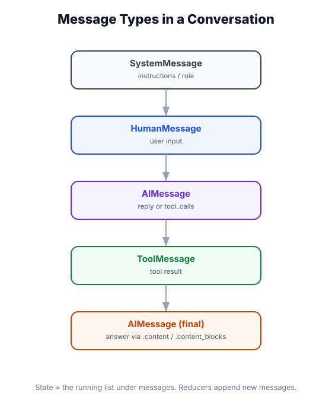

Messages
What you'll learn: The four message types in LangChain, how they map to chat turns, what content blocks are (and why they exist), how to construct messages for multimodal inputs, and how messages flow through the agent loop.

↗ Open full size · ⬇ Edit in Excalidraw — labels use real LangChain classes.
Messages: The Language of LLMs
Every interaction with a chat model is a list of messages. The model receives the full conversation history each time — there is no server-side session. LangChain uses four message types, each representing a different role in the conversation:
Think of messages as a theater script. SystemMessage is the director's notes (setting the scene before the play starts). HumanMessage is the audience's voice. AIMessage is the actor's response. ToolMessage is the prop master delivering what the actor asked for. Every time the model speaks, it reads the entire script from the beginning — nothing is remembered natively, it's all in the messages.
from langchain_core.messages import HumanMessage
Represents the user's input. Every turn where a person types something becomes a HumanMessage. Can contain text, images, files.
from langchain_core.messages import AIMessage
The model's response. May be plain text, or may include tool_calls — requests to execute tools (without any text yet).
from langchain_core.messages import SystemMessage
Instructions to the model about its role, behavior, and constraints. Always appears first. In create_agent(), the system_prompt param generates this automatically.
from langchain_core.messages import ToolMessage
The result of executing a tool. Must include the tool_call_id that links it back to the AIMessage's tool_call that triggered it.
A Complete Conversation History
Here's what the message list looks like for a two-turn conversation where the agent uses a tool:
tool_calls: [{"name": "multiply", "args": {"a": 12, "b": 15}, "id": "call_abc123"}]
tool_call_id: "call_abc123"
On Turn 2, the model receives ALL messages: SystemMessage + Turn 1 HumanMessage + the AIMessage with tool_call + ToolMessage + AIMessage answer + Turn 2 HumanMessage. This is how the model "remembers" the conversation — it's not a session, it's a scrollback buffer. LangChain's checkpointer manages this automatically.
Working with Messages in Code
from langchain_core.messages import (
HumanMessage,
AIMessage,
SystemMessage,
ToolMessage,
)
# Create messages
human = HumanMessage(content="Hello, what's the weather today?")
system = SystemMessage(content="You are a weather assistant.")
ai = AIMessage(content="I can help with weather! Which city?")
# Access properties
print(human.content) # "Hello, what's the weather today?"
print(human.type) # "human"
print(human.id) # auto-generated UUID (used for deduplication)
# Shorthand: plain dicts work too (LangChain auto-converts)
messages = [
{"role": "system", "content": "You are helpful."},
{"role": "user", "content": "Tell me a joke."},
]
# Equivalent to:
messages = [
SystemMessage("You are helpful."),
HumanMessage("Tell me a joke."),
]
# AIMessage with tool calls
ai_with_tool = AIMessage(
content="", # empty — model is calling a tool, not responding with text
tool_calls=[{
"name": "get_weather",
"args": {"city": "Tokyo"},
"id": "call_xyz",
"type": "tool_call",
}]
)
# ToolMessage (result of executing the tool)
tool_result = ToolMessage(
content='{"temp": 22, "condition": "Sunny"}',
tool_call_id="call_xyz", # must match the AIMessage's tool_call id!
)
print(ai_with_tool.tool_calls) # [{'name': 'get_weather', 'args': {'city': 'Tokyo'}, ...}]Content Blocks: Beyond Simple Text
The content field of a message can be either a plain string or a list of content blocks. Content blocks allow richer, multimodal messages:
text
Plain text content. The most common type.
image_url
An image by URL or base64. For vision-capable models.
tool_use
A tool call request (in AIMessages). Contains name, args, id.
tool_result
The output of a tool execution (in ToolMessages).
thinking
Reasoning tokens (Claude extended thinking). Visible internal monologue.
file / document
Attached files — PDFs, text docs, for models that support file uploads.
Multimodal Messages (Images)
from langchain_core.messages import HumanMessage
from langchain.chat_models import init_chat_model
model = init_chat_model("openai:gpt-4o") # vision model
# Text + image URL
msg = HumanMessage(content=[
{"type": "text", "text": "What objects are in this image?"},
{
"type": "image_url",
"image_url": {
"url": "https://upload.wikimedia.org/wikipedia/commons/thumb/4/47/PNG_transparency_demonstration_1.png/280px-PNG_transparency_demonstration_1.png",
"detail": "high", # "low" (faster/cheaper) or "high" (more detailed)
},
},
])
response = model.invoke([msg])
print(response.content)
# Multiple images in one message
msg_multi = HumanMessage(content=[
{"type": "text", "text": "Compare these two images:"},
{"type": "image_url", "image_url": {"url": "https://example.com/img1.jpg"}},
{"type": "image_url", "image_url": {"url": "https://example.com/img2.jpg"}},
])
# Base64 image (for local files)
import base64
with open("chart.png", "rb") as f:
b64 = base64.b64encode(f.read()).decode()
msg_local = HumanMessage(content=[
{"type": "text", "text": "Describe this chart."},
{"type": "image_url", "image_url": {"url": f"data:image/png;base64,{b64}"}},
])Reasoning / Thinking Tokens
Some models (Claude with extended thinking, o3) expose their internal reasoning as content blocks:
from langchain.chat_models import init_chat_model
from langchain_core.messages import HumanMessage
# Enable extended thinking for Anthropic
model = init_chat_model(
"anthropic:claude-3-5-sonnet-20241022",
thinking={"type": "enabled", "budget_tokens": 5000}
)
response = model.invoke([HumanMessage("What is the hardest part of building AI agents?")])
# The response content is a LIST of blocks
for block in response.content:
if isinstance(block, dict):
if block.get("type") == "thinking":
print("=== THINKING ===")
print(block["thinking"]) # internal reasoning
elif block.get("type") == "text":
print("=== ANSWER ===")
print(block["text"]) # the actual responseMessage Properties Reference
| Property | Type | Description |
|---|---|---|
.content |
str | list | The message text, or a list of content blocks for multimodal |
.type |
str | "human", "ai", "system", or "tool" |
.id |
str | None | Unique identifier for deduplication during streaming |
.name |
str | None | Optional name for the sender (useful in multi-agent setups) |
.tool_calls |
list | AIMessage only — list of tool call requests |
.tool_call_id |
str | ToolMessage only — links back to the AIMessage's tool_call |
.response_metadata |
dict | AIMessage only — token usage, model name, finish reason |
.usage_metadata |
dict | AIMessage only — standardized token counts across providers |
Filtering and Manipulating Messages
LangChain provides utilities for working with message lists — useful for context engineering (Module 16):
from langchain_core.messages import (
filter_messages,
trim_messages,
HumanMessage, AIMessage, SystemMessage, ToolMessage,
)
messages = [
SystemMessage("You are helpful."),
HumanMessage("Hi!"),
AIMessage("Hello! How can I help?"),
HumanMessage("What's the capital of France?"),
AIMessage("Paris."),
]
# Filter by type
human_only = filter_messages(messages, include_types=["human"])
# → [HumanMessage("Hi!"), HumanMessage("What's the capital of France?")]
# Trim to fit within token budget (Module 16 covers this in depth)
trimmed = trim_messages(
messages,
max_tokens=50,
token_counter=len, # use a real token counter in prod
strategy="last", # keep the most recent messages
include_system=True, # always keep the system message
)
# Convert to dict format (for logging, APIs)
as_dicts = [msg.model_dump() for msg in messages]If an AIMessage contains tool_calls, the NEXT message(s) in the list MUST be ToolMessages with matching tool_call_id. Sending an AIMessage with tool_calls and then a HumanMessage directly will cause an API error with most providers. LangChain handles this automatically in create_agent() — but if you're manually constructing message lists, watch out for this ordering requirement.
content="Hello" and content=[{"type": "text", "text": "Hello"}] are semantically identical. But when you print the message, message.content returns whatever you set — a string or a list. Code that assumes content is always a string will break on multimodal messages. Always check: isinstance(msg.content, str) before string operations.
Real-World Use Case
📸 Document Intelligence Agent
A legal review agent receives scanned contract PDFs. Each page is converted to a base64 image and embedded in a HumanMessage as image content blocks. The model analyzes clause by clause, returning AIMessages with both text explanations and tool_calls to flag specific clauses in a database. The thinking tokens are logged for audit purposes — showing exactly what the model "considered" before flagging a risky clause. Message-level tracing in LangSmith makes every decision auditable.
Messages are the atomic unit of agent communication. There are four types: HumanMessage (user), AIMessage (model), SystemMessage (instructions), ToolMessage (tool result). Content can be a plain string or a list of content blocks for multimodal input. The model always sees the full history — memory is just message management. LangChain handles all the message sequencing rules automatically when you use create_agent().